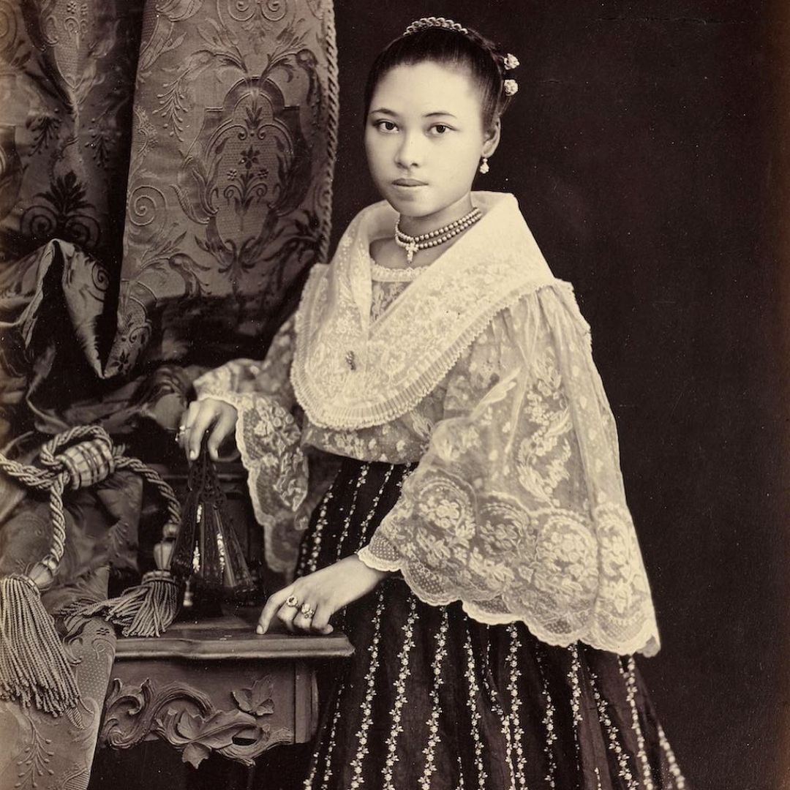
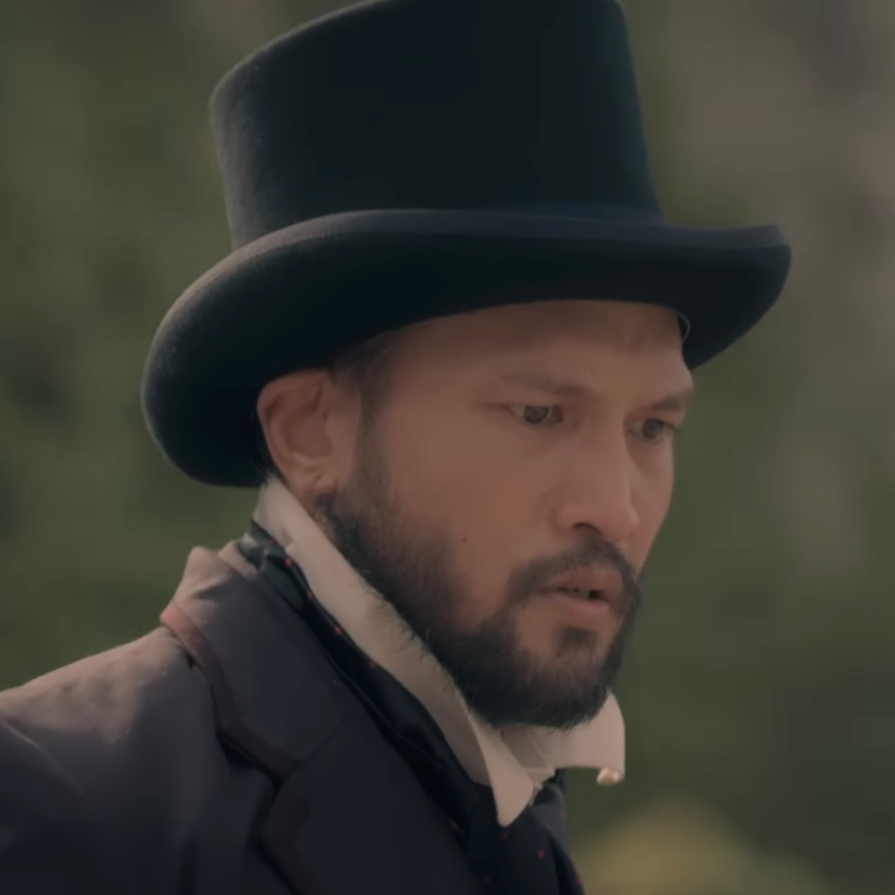
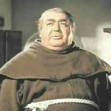

Noli Me Tangere
| NOLI ME TANGERE |
>

| Cristostomo Ibarra | - Christostomo Ibarra is the son of Don Rafael Ibarra.
- He studied in Spain for 7 years.
- He is technically the main character of Noli Me Tangere.
- His symbol in the story is like Jose Rizal and is one of the educated Filipinos who revolted.
|
|  | Maria Clara |
- Maria Clara is the daughter of Kapitan Tiago.
- She is a lover of Cristostomo Ibarra.
- Her symbol is she is one of the victims of the acts of the church
|
|  | Don Rafael |
- Don Rafael is the father of Cristostomo Ibarra.
- He was a good man trying to help people and was against the church/.
- His symbol is the people who try to help even if they are part Spanish.
|
|  | Padre Damaso |
- Padre Damaso is one of the antagonists of Noli Me Tangere.
- He is an evil Padre who only cared for himself and wanted to gain power by even using the church.
- He is the symbol of the evil acts that the church did during the rule of Spain.
|
 | Kapitan Tiyago |
- Kapitan Tiago is also one of the late antagonists of Noli Me Tangere.
- He is the father of Maria Clara and is a rich Spanish who was a friend of Father Damaso and Don Rafael.
- His symbol is one of the stereotypical rich people who was a bit evil.
|
Extra Characters
references
Wiki, C. T. M. C. a. I. (n.d.). Crisostomo Ibarra. Maria Clara at Ibarra Wiki. https://mariaclaraatibarra.fandom.com/wiki/Crisostomo_Ibarra/
Asis, Z. (2023). Why It’s Time To Rewrite María Clara & Our Filipina Story. Cambio & Co. https://www.shopcambio.co/blogs/news/why-it-s-time-to-rewrite-maria-clara-our-filipina-story
Wiki, C. T. M. C. a. I. (n.d.-b). Don Rafael. Maria Clara at Ibarra Wiki. https://mariaclaraatibarra.fandom.com/wiki/Don_Rafael/
Facebook. (n.d.). https://www.facebook.com/Padre-Damaso-375988452996313/photos/375990409662784/?paipv=0&eav=AfZvBDPOlpSCTroWu59aOZQtBSBkW6nMoXoVvOdRpOqyr_M8XsUSBq97GrgAr_TZphE&_rdr
Wiki, C. T. M. C. a. I. (n.d.-c). Kapitan Tiago. Maria Clara at Ibarra Wiki. https://mariaclaraatibarra.fandom.com/wiki/Kapitan_Tiago/
Lauren. (2021). Air fried hot dogs. Low Carb Nomad. https://www.lowcarbnomad.com/air-fried-hot-dogs/
Lauren. (2021). Air fried hot dogs. Low Carb Nomad. https://www.lowcarbnomad.com/air-fried-hot-dogs/
Lauren. (2021). Air fried hot dogs. Low Carb Nomad. https://www.lowcarbnomad.com/air-fried-hot-dogs/
Lauren. (2021). Air fried hot dogs. Low Carb Nomad. https://www.lowcarbnomad.com/air-fried-hot-dogs/
Lauren. (2021). Air fried hot dogs. Low Carb Nomad. https://www.lowcarbnomad.com/air-fried-hot-dogs/